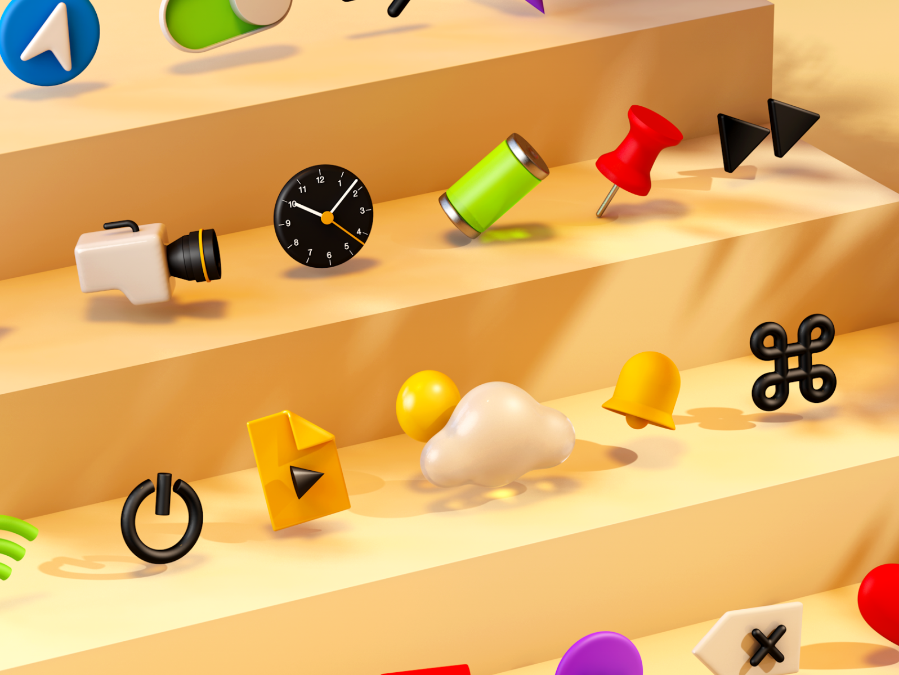
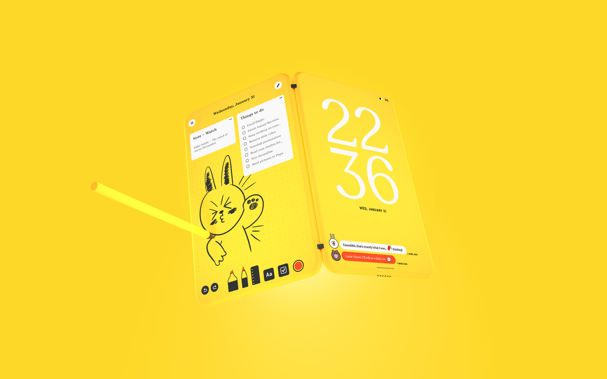
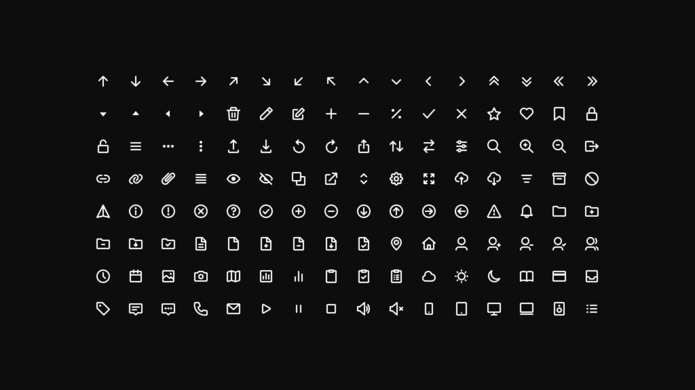
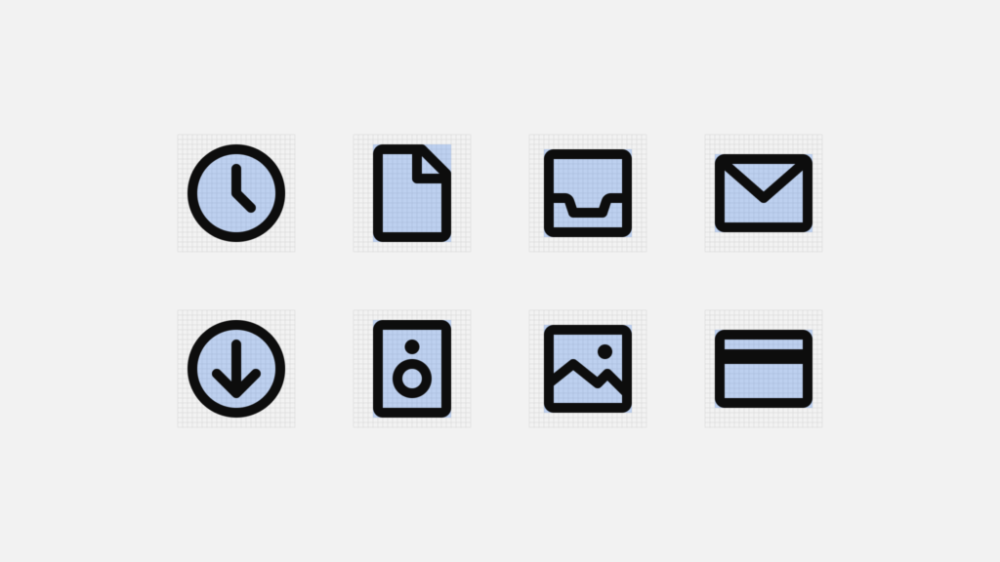
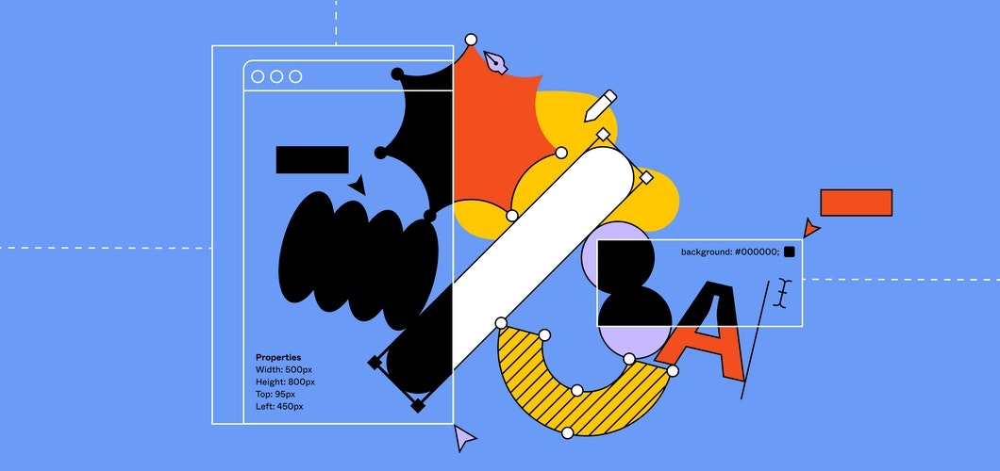
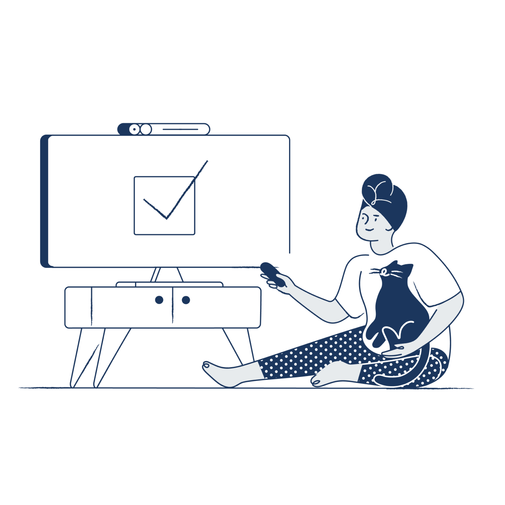
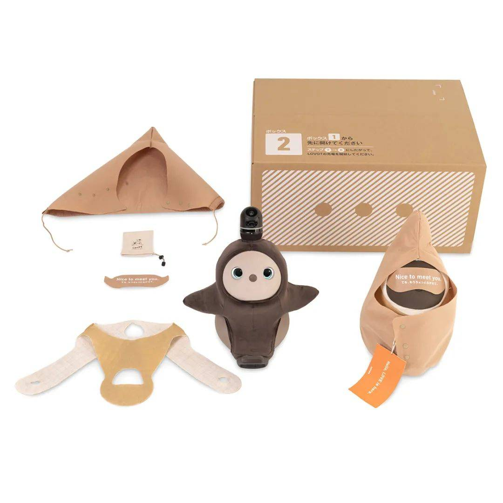

设计周刊 Design Weekly #26
🏷 设计灵感
Guglieri
顶级大神 Claudio Guglieri 的新作品。


🏷 设计资源
Mono 图标集
https://trudov.com/design/the-evolution-of-the-google-sign-up-form/
不断扩展的图标集 Mono，目前包含 136 款涵盖界面所需的基本图标，持续关注吧。
文中介绍了图标集为了确保图标一致，使用了一套基本规则和设计原则，包括网格24px*24px、填充、关键线、笔画和圆角半径的处理。


🏷 设计新闻
Figma Config 又带来了什么新功能？
https://www.figma.com/blog/config-europe-2020-new-feature-announcements/
Figma 举办的第二届 Config Europe，主题是让设计和代码连接更紧密。
传统上，设计人员和开发人员属于两个不同的世界，使用不同的工具。在实践中，他们是合作伙伴，一起将想法变为现实中的产品。虽然他们的方法不同，但各自都有独特的优势。在Config Europe上，宣布的几项新功能，这些功能将在figma的设计系统中发挥设计和开发两方面的优势——使它们更接近代码，使用起来更直观，同时更有效地将想法落地实现。
在这次大会上，Figma 公布了一些新功能的预告：组件变体、组件变换菜单、交互式组件、Auto Layout 大更新和开发者面板。具体细节可以看这里 （译文）

🏷 设计文章
负责任的创新原则
https://about.fb.com/realitylabs/responsible-innovation-principles
Facebook Reality Labs 制定了"负责任的创新原则 “来指导工作：帮助团队预测解决新技术的风险，对打造包容、隐私为中心的产品作出承诺。原则包含四点：
- 永远不要给人惊喜：让用户知道产品是做什么的，如何使用，数据的透明度；
- 适当引导：给用户足够信息来做决定；
- 雨露均沾：考虑到每一个接触到产品的人和没有使用产品的人；
- 以人为本：在决定什么对业务有利时，优先考虑对社区中大多数人最有利的事情。

🏷 随便看看
2021日本包装设计奖获奖作品一览
https://www.shejipi.com/451772.html
自1985年以来，日本包装设计奖竞赛每两年举办一次，旨在提高包装设计领域的社会地位。包装设计奖不仅要从包装材料（例如生产、分销和环境）方面进行评估，而且还要从设计价值和产品创造的角度对其进行评估。
2021年日本包装设计奖，选出以下40项获奖作品（分别为1个大奖、12个金奖、11个银奖、14个铜奖和4个评委特别奖）：
